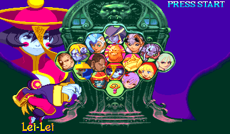
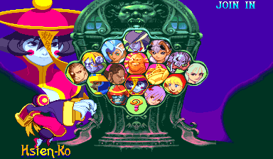
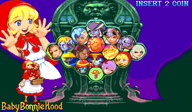
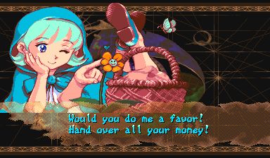
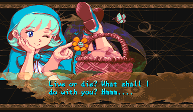
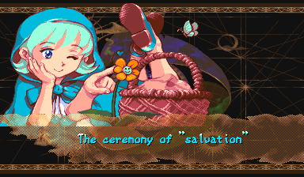

Vampire Savior 2
English translation
Screenshots
Original

Patched




Original

Patched


About this patch
Vampire Savior 2 is a Japan-only update of Vampire Savior with a shuffled roster. Donovan, Huitzil, and Pyron join the fight, while Gallon, Aulbath, and Sasquatch sit this one out, and it carries its own set of endings. It never came out in English. This patch translates the entire game.
Where Capcom's own English exists, in the Western Vampire Savior and the PlayStation Darkstalkers 3, the patch uses it, as long as it says what the Japanese says, so it reads like the official localization. The lines unique to this version get a fresh translation, written to read naturally while staying true to the original: the quotes for Huitzil, Pyron, and Donovan, plus every ending and the final confrontation with Jedah.
The title screen keeps the Vampire Savior 2 name, which is how the game appeared in arcades. 'Darkstalkers 3' was a later name used only for the home versions.
What's changed
- USA region presentation
- Western character names on character select, route map, and fight HUD: Bulleta → Baby Bonnie Hood, Zabel → L.Raptor, Lei-Lei → Hsien-Ko, Phobos → Huitzil
- All 241 post-fight quotes in English, using Capcom's own wording where it matches the Japanese
- Both endings and both four-page Jedah final-boss dialogs translated
- Route stage names and option labels match the official U.S. arcade wording
- Capcom's misspelled "L.Rapter" name art corrected to L.Raptor
- Oboro Bishamon's win plays his own victory music, as intended
Downloads
You need your own dump of Vampire Savior 2: The Lord of Vampire (Japan 970913) as the MAME
set vsav2.zip.
Each zip includes a readme.txt with full instructions.
How to apply
unzip vsav2-english-rc2-ips.zip -d vsav2-patch
cd vsav2-patch
python3 apply.py /path/to/vsav2.zip --out-dir outThe script checks every file against the checksums below, applies the patches, checks the result, and writes the files for every platform in one go:
out/mame/vsav2.zip
out/hbmame/vsav2s04.zip
out/mister/_Arcade/_Arcade Patches/_Translations/Vampire Savior 2 (USA) [English Translation].mraMAME and original hardware. Put the zip from out/mame/ ahead of the
stock set in your MAME rompath (it keeps the name vsav2.zip), or burn its ROM
files. MAME reports checksum warnings for the patched ROMs. That's expected, and the game runs
normally.
HBMAME. Put the zip from out/hbmame/ in HBMAME's
roms/ folder next to your stock vsav2.zip. It loads with no checksum
warnings. This translation is an official HBMAME set, vsav2s04 (merged upstream), so full HBMAME collections may already carry it.
MiSTer. Copy the _Arcade folder from
out/mister/ to the root of your SD card, and keep the stock, unmodified romset at
games/mame/vsav2.zip (split MAME sets also need qsound.zip). You need
Jotego's jtcps2 core, which update_all installs. The MRA applies the translation in memory
as the game loads, so nothing on your card is modified, and it keeps its own settings and saves under vsav2en.
The MiSTer-only download holds the same MRAs, ready to copy.
Any IPS patcher. Apply each file in ips/
(Flips, Lunar IPS, …) to the ROM file of the same name and re-zip the set yourself.
Changed ROMs
| File | Size | Original CRC32 | Patched CRC32 |
|---|---|---|---|
| vs2.13m | 4.0 MB | 5c852f52 | 5dd1100c |
| vs2.15m | 4.0 MB | a20f58af | 462e62a8 |
| vs2.17m | 4.0 MB | 39db59ad | 4614aea0 |
| vs2.19m | 4.0 MB | 00c763a7 | 49af9cfa |
| vs2j.03 | 512 KB | 89fd86b4 | 5c7b4f47 |
| vs2j.04 | 512 KB | 107c091b | a1192efc |
| vs2j.08 | 512 KB | 2018c120 | cb8b85c6 |
Release history
rc2 (2026-09-17)
- The translation now uses Capcom's official Darkstalkers 3 English wherever it was accurate to the Japanese, and the rest has been refined to match Capcom's style.
- The longest ending no longer crashes and resets the game partway through.
- Oboro Bishamon's win now plays his own victory theme instead of the pre-boss theme.
- Capcom's hidden name art spelled Lord Raptor "L.Rapter". It now reads L.Raptor everywhere it appears.
- Oboro Bishamon's silent win quote now shows as a clean row of dots, instead of stray marks.
- The set now also changes four graphics ROMs for the name art, so rebuild it with the rc2 kit.
rc1 (2026-07-10)
- First public release.
Notes
- Release candidate: the translation is complete and tested, but the wording review is still open. Report anything that reads badly.
- MAME reports checksum warnings for the seven patched files. This is expected; the game boots and plays normally.